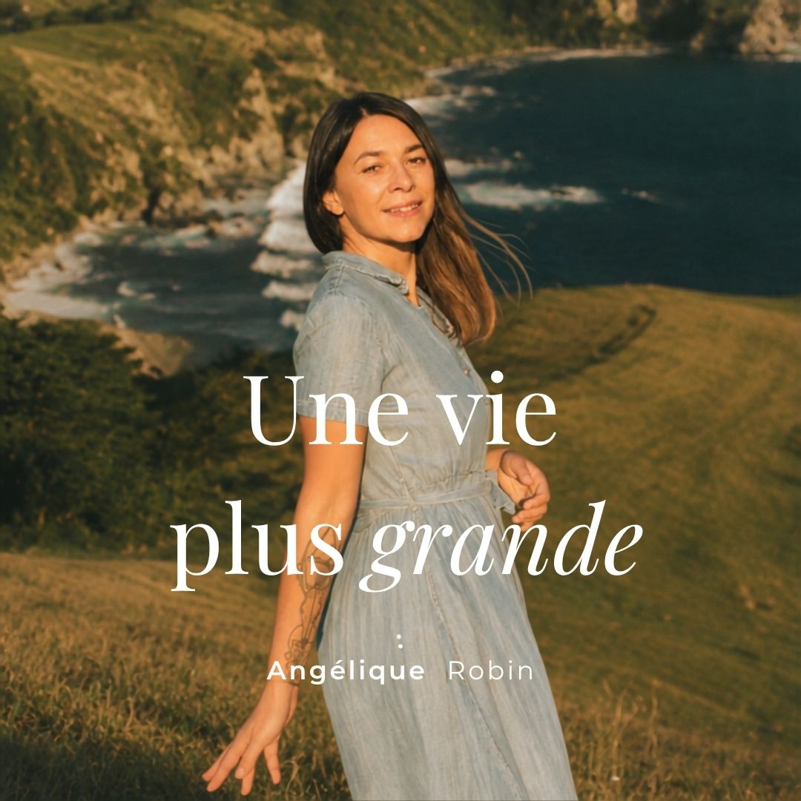

Parce que ta vie extérieure est souvent le reflet de tes croyances, de ce que tu t'autorises, de ce que tu portes encore de ton passé.
Quand tu changes ton regard sur toi, tes blessures, tes envies et ta place, tu ne deviens pas quelqu'un d'autre. Tu reviens à toi.
Et c'est depuis cet endroit-là que tout peut vraiment changer.
Ton inconscient fait toujours ce qu'il pense être bon pour toi.
Pour te protéger et t'empêcher de revivre certaines expériences douloureuses. Et donc, par amour pour toi.
Ce qui donne des situations dans lesquelles tu ne comprends pas pourquoi tu agis ainsi, ou pourquoi tu restes bloqué·e dans des schémas que tu penses impossibles à dépasser.
Mon accompagnement te permet d'en finir avec tous tes freins inconscients. Peurs, valeurs héritées, comportements mystérieux, addictions, rapport à l'argent déséquilibré, conflits relationnels, manque de confiance en soi…
Quand tu travailles avec moi, nous allons à la racine du problème.
Tu repars avec de la clarté, de la légèreté et une vraie transformation intérieure.
Pendant longtemps, j'ai cru que je devais rentrer dans le moule.
Jusqu'à ce que je comprenne que mon décalage était en réalité ma boussole.
Mon chemin m'a menée de la quête de moi-même, à la connaissance de ma raison d'être et à la libération de mes conditionnements, jusqu'à l'accompagnement.
Découvrir mon histoire →Selon là où tu en es — un déblocage précis, un chemin de deux mois, ou installer ton système avec l'IA.
Le programme Lotus : un accompagnement de deux mois pour te retrouver en profondeur et transformer durablement ta façon d'habiter ta vie.
Programme Lotus · 2 mois
Une seule séance, un seul déblocage. Pour lever ce qui te retient, ici et maintenant, avec clarté.
Une séance · un déclic
Un programme pour les coachs et thérapeutes : installe ton Second cerveau et ton ruissellement de contenu, assisté par l'IA.
Programme · bêta
« Je vous recommande Angélique, pépite de coach qui vous accompagne à aborder vos projets de manière efficace, avec en bonus un pas de plus vers la découverte de vous-même. »
« Je remercie Angélique pour son écoute attentive, son professionnalisme, toutes les ressources et connaissances qu'elle a pu mettre à mon service. Ce fut un travail riche et intense qui porte ses fruits. »
« Elle m'a aidée avec patience et bienveillance à faire le bilan sur ma situation et ce que je souhaitais vraiment pour la suite. Aujourd'hui, j'ai le courage de prendre un nouveau départ en toute confiance. »

Une vie plus grande, c'est le podcast qui t'invite à créer une vie alignée à qui tu es vraiment. Une vie où tu ne te contentes plus d'avancer en pilote automatique, où tu oses faire des choix qui te ressemblent, où tu construis pierre après pierre une vie qui te met vraiment en joie.
En savoir plus